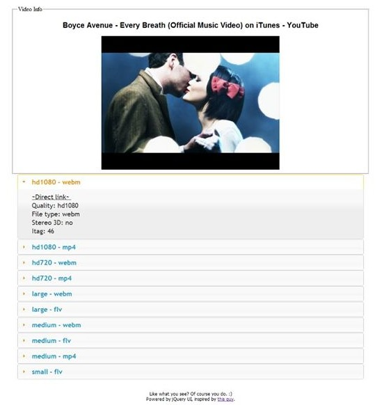
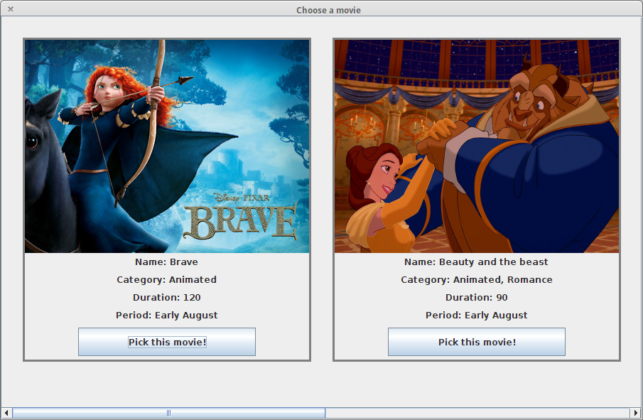
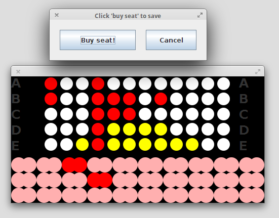
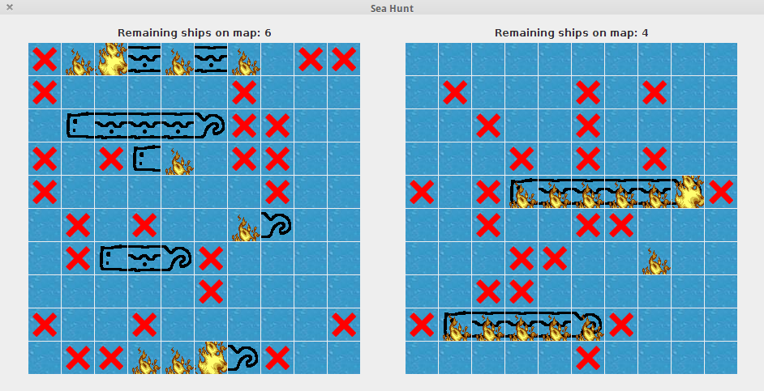
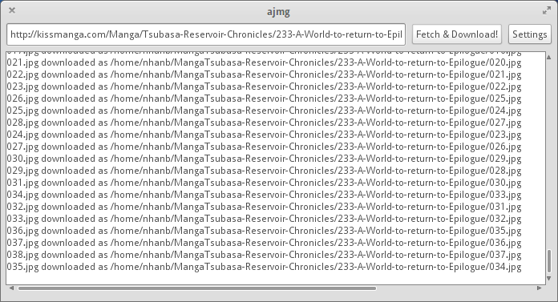

"Have you built anything cool?"
So recently I went to a networking event—something I have never liked or been good at. I’m not sure if I’m one of those introverts or if I’m just socially awkward, but the very idea of going around trying to converse with total strangers just to exchange business cards is not at all appealing to me. Anyway, that’s another story. Right now I want to write about something a guy from a non-tech company asked me:
- Have you built anything cool?
- [pause] Well, more or less…
- What do you mean by “more or less”? […] Have you built anything at all?
Then I went on trying to explain what my recent side project—pytaku—does and why it is awesome for me. He seemed to be disinterested halfway through so I decided to shut up anyway.
Sure, I have done stuff now and then, be it assignment work or something I decided to create for my own amusement. It is just funny how I have already stepped into to my final year without taking a proper look back at what I have done in these past 2 years, so I’m going to do just that.
If you—Nicholas—are reading this and don’t want all the nerdy stuff, here are my condensed answers:
Have you built anything?
Yes, I have made desktop and Android games, a movie ticket sales program, a desktop manga grabber, a web version of it that talks to dropbox, and several small shell scripts / web utilities.
So, nothing cool?
If you’re neither a tech geek nor an otaku (which I assume you’re not) then no, there’s probably nothing I’ve done that you would find interesting.
Nerd alert!
The rest of this post is aimed at the nerdier more tech-savvy audience. You have been
warned ;)
First year: Welcome to the web, and the GUI programming disillusionment
I had touched web stuff before in high school: a vBulletin forum that I created (unofficially) for students in my middle school. However, I only properly learned PHP and JS when I started the Web Programming course here. With (moderately) great power came great desires, so I set out to build a basic PHP site to scrape a youtube view page’s HTML to get direct video links (not working anymore since a recent youtube update):

That was my first touch on jQueryUI and regular expressions; I also learned how RMIT’s mekong
server sucked to the point that it didn’t allow get_file_contents().
About school assignments? Nothing interesting: standard minimal LAMP CMS with jQuery glitter sprinkled on top. Not a bad experience but meh.
I also learned about MVC and GUI programming with Java swing. I did write a movie ticket program with a (pretty minimal) seat picker and a battleship-inspired game:
  
Then it occurred to me that programming GUI interfaces for desktop programs was much more tedious than doing it for the web, especially when working with the now-not-favored Swing toolkit. Nightmarish days…
Another lesson learned the hard way was that “MVC” is not even a concrete thing, and there is hardly any obvious “one true way” to implement that. I spent much more time planning for plumbing code than I the time I spent actually writing “feature” code. And the result, now looking back, was not even that good. And yeah, there was no such thing as “separation of concerns” in my code back then, which eventually led to countless times of tracing obscure stack traces for debugging (good thing I had a lot of free time back then).
To rub salt in the wound, I came to realize that nobody cared how Swing looked on any desktop
environment other than OS X and Windows. Font rendering was painful to look at, and the only way to
make it a little bit more acceptable was using a
forked version of OpenJDK.
WTF guys? And that’s not the only problem; let’s talk Look And Feel. Java’s built-in
getSystemLookAndFeel() could only detect GNOME’s. When developing ajmg I discovered that and had
to write my own method that extended the thing to detect more DEs, but soon after that I thought
“What the hell, why do I even have to do this?” and decided that Swing was dead to me (or any
desktop Linux user for that matter).
Second year: enough of this bull school crap. I’m making stuff for myself!
To be fair, the following year has offered a number of new stuff: C/C++ programming, a taste of the M$ .NET C# stack (still impressed by Visual Studio’s vi mode plugin), more Java, Android app programming, and some neat security tricks. However, none of those intrigued me much, so I decided to start making things for my own:
Shell scripts
If you have taken a look at my dotfiles, you’ll notice that I do write a bunch of shell scripts to automate stuff I do often. The one I’m currently proudest of is rmiproxy_silent, a script that automatically detects whether I am using RMIT’s network and set/clear the appropriate proxy settings. Another one that I can’t live without is install.sh, a script that helps install all my dotfiles, sets up zsh and various things. It saved me a lot of time whenever I reinstall my system.
Obligatory shout-out to oh-my-zsh, greatest invention since sliced bread! Those guys are awesome!
AJMG, then Pytaku, then… who knows?
The original idea was actually creating a Java Swing program that helps download manga. It was born out of frustration of DomDomSoft, a manga downloader that requires “donation” to unlock full functionalities. “I could do that, and I’ll open source the crap out of it, because open source is awesome”, I thought. Then I spent some time and got the minimal program working program:

This program did help me get a firm knowledge of java’s thread manipulation and using http proxy (so I could exploit RMIT’s awesome network bandwidth). I also succeeded in achieving separation of concern to a certain level this time, allowing contributors (if any) to easily add support for other manga reader sites. But then again, Swing’s quirks put me off, so my bad habit of losing interest quickly kicked in and the project stopped there.
Then came Pytaku, ajmg’s spiritual successor. At this point I knew enough of python and wanted to try out Google App Engine, so I decided to make a web version of AJMG, with the difference that instead of downloading directly, it forwards everything to the user’s Dropbox folder. Why not Google Drive you ask? Because they haven’t even bothered to release an official Linux client for it. Shame on you, Google!
Loads of exciting things were learned along the way: how URL handling works in webapp2 and in other
web frameworks in general, proper templating (can’t believe I ever wrote <title><?php echo $title;
?></title>… not cool!), OAuth2 (more than a few “Aha!” moments working with this little guy…),
Google’s Datastore and NoSQL in general, and of course, Twitter Bootstrap–saving clueless
non-designer developers since its inception.
And now, I’m rewriting it from scratch, this time trying out TDD, making use of travis-ci, which will be especially helpful to periodically test if a manga site has changed its page layout and screwed up Pytaku’s scraping code. I have encountered a number of quirks when trying to set up the correct testing boilerplate for a Google App Engine project, but it seems everything will be smooth from now on. This holiday season I plan to at least roll out an alpha version to show off. Stay tuned if you’re interested!
To sum it up…
I don’t believe in developing products I myself don’t want to use. I want to make things that make my life easier, and if that helps others too then it’s a huge bonus. This is why Github is my favorite company right now, and How GitHub uses GitHub to build GitHub remains the best developer speech I have ever seen.
Right now I haven’t made a full-blown program that I can confidently distribute to end users, but I certainly have made quite a few nifty tools to improve my day-to-day computing tasks and learned a lot along the way. Right now I cannot confidently answer this big question by pointing them to a polished website detailing every nook and cranny of my shiny widely-used, battle-tested program, but I’m confident I have the right knowledge to get there. If there is such a thing as “Lunar New Year Resolution”, I guess mine is that one year from now, I will have a satisfying answer to this question. Watch out world, I’m coming!
If you managed to get here, you are probably a tech geek like me. So, have you built anything cool recently?